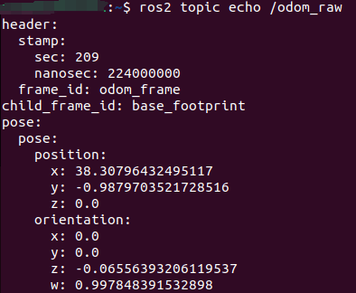

Компиляция библиотеки драйвера micro-ROS
-
- Установка кросс-компилятора
-
- Получение файлов библиотеки STM32-microros
-
- Изменение параметров
-
- Добавление переменных окружения
-
- Запуск компиляции
-
- Решение проблемы с include
-
- Итоговый файл
-
- Импорт проекта в STM32CUBEIDE
Примечание: библиотеку драйвера micro-ROS необходимо компилировать в Ubuntu. Рекомендуется Ubuntu 22.04.
1. Установка кросс-компилятора
Откройте адрес загрузки и скачайте версию кросс-компилятора для Linux.
https://developer.arm.com/downloads/-/gnu-rm
После распаковки поместите файлы по следующему пути:
/opt/gcc-arm-none-eabi
И добавьте путь к исполняемым файлам в переменную окружения .bashrc домашнего каталога пользователя.
export PATH=$PATH:/opt/gcc-arm-none-eabi/bin

2. Получение файлов библиотеки STM32-microros
Скачайте и скомпилируйте инструмент настройки micro-ROS.
mkdir uros_ws && cd uros_ws
git clone -b humble https://github.com/micro-ROS/micro_ros_setup.git
src/micro_ros_setup
rosdep update && rosdep install --from-paths src --ignore-src -y
colcon build
source install/local_setup.bash
Используйте инструмент настройки micro-ROS, чтобы сгенерировать файлы библиотеки STM32-microros.
ros2 run micro_ros_setup create_firmware_ws.sh generate_lib
Проверьте рабочую область. Теперь должно быть пять папок, среди которых папка firmware содержит файлы библиотеки STM32-microros: build, firmware, install, log, src.

3. Изменение параметров
Откройте файл toolchain.cmake:
vim ~/uros_ws/firmware/toolchain.cmake
Скопируйте в него следующее содержимое:
set(CMAKE_SYSTEM_NAME Generic)
set(CMAKE_CROSSCOMPILING 1)
set(CMAKE_TRY_COMPILE_TARGET_TYPE STATIC_LIBRARY)
# SET HERE THE PATH TO YOUR C99 AND C++ COMPILERS
# Укажите здесь путь к компиляторам
set(PIX /opt/gcc-arm-none-eabi/bin)
set(CMAKE_C_COMPILER ${PIX}/arm-none-eabi-gcc)
set(CMAKE_CXX_COMPILER ${PIX}/arm-none-eabi-g++)
set(CMAKE_C_COMPILER_WORKS 1 CACHE INTERNAL "")
set(CMAKE_CXX_COMPILER_WORKS 1 CACHE INTERNAL "")
# SET HERE YOUR BUILDING FLAGS
set(FLAGS "-O2 -ffunction-sections -fdata-sections -fno-exceptions -mcpu=cortex-m7 -mfpu=fpv5-d16 -mfloat-abi=hard -nostdlib -mthumb --param max-inline-insns-single=500 -D'RCUTILS_LOG_MIN_SEVERITY=RCUTILS_LOG_MIN_SEVERITY_NONE'" CACHE STRING "" FORCE)
# -mcpu=cortex-m7 указывает архитектуру микроконтроллера
# -mfpu=fpv5-d16 -mfloat-abi=hard указывает на поддержку компиляции с аппаратной плавающей точкой

set(CMAKE_C_FLAGS_INIT "-std=c11 ${FLAGS} -DCLOCK_MONOTONIC=0 -D'__attribute__(x)='" CACHE STRING "" FORCE)
set(CMAKE_CXX_FLAGS_INIT "-std=c++11 ${FLAGS} -fno-rtti -DCLOCK_MONOTONIC=0 -D'__attribute__(x)='" CACHE STRING "" FORCE)
set(__BIG_ENDIAN__ 0)
Сохраните и закройте файл.
Откройте файл colcon.meta:
vim ~/uros_ws/firmware/colcon.meta
Скопируйте в него следующее содержимое:
{
"names": {
"tracetools": {
"cmake-args": [
"-DTRACETOOLS_DISABLED=ON",
"-DTRACETOOLS_STATUS_CHECKING_TOOL=OFF"
]
},
"rosidl_typesupport": {
"cmake-args": [
"-DROSIDL_TYPESUPPORT_SINGLE_TYPESUPPORT=ON"
]
},
"rcl": {
"cmake-args": [
"-DBUILD_TESTING=OFF",
"-DRCL_COMMAND_LINE_ENABLED=OFF",
"-DRCL_LOGGING_ENABLED=OFF"
]
},
"rcutils": {
"cmake-args": [
"-DENABLE_TESTING=OFF",
"-DRCUTILS_NO_FILESYSTEM=ON",
"-DRCUTILS_NO_THREAD_SUPPORT=ON",
"-DRCUTILS_NO_64_ATOMIC=ON",
"-DRCUTILS_AVOID_DYNAMIC_ALLOCATION=ON"
]
},
"microxrcedds_client": {
"cmake-args": [
"-DUCLIENT_PIC=OFF",
"-DUCLIENT_PROFILE_UDP=OFF",
"-DUCLIENT_PROFILE_TCP=OFF",
"-DUCLIENT_PROFILE_DISCOVERY=OFF",
"-DUCLIENT_PROFILE_SERIAL=OFF",
"-UCLIENT_PROFILE_STREAM_FRAMING=ON",
"-DUCLIENT_PROFILE_CUSTOM_TRANSPORT=ON",
"-DUCLIENT_PROFILE_SHARED_MEMORY=ON",
"-DUCLIENT_SHARED_MEMORY_MAX_ENTITIES=20"
]
},
"rmw_microxrcedds": {
"cmake-args": [
"-DRMW_UXRCE_MAX_NODES=1",
"-DRMW_UXRCE_MAX_PUBLISHERS=10",
"-DRMW_UXRCE_MAX_SUBSCRIPTIONS=10",
"-DRMW_UXRCE_MAX_SERVICES=1",
"-DRMW_UXRCE_MAX_CLIENTS=1",
"-DRMW_UXRCE_MAX_HISTORY=10",
"-DRMW_UXRCE_TRANSPORT=custom"
]
}
}
}
"-DRMW_UXRCE_MAX_NODES=1"— максимальное число нод (nodes);"-DRMW_UXRCE_MAX_PUBLISHERS=10"— максимальное число публикующих сущностей (publisher);"-DRMW_UXRCE_MAX_SUBSCRIPTIONS=10"— максимальное число подписчиков (subscriber);"-DRMW_UXRCE_MAX_SERVICES=1"— максимальное число серверов (сервисов);"-DRMW_UXRCE_MAX_CLIENTS=1"— максимальное число клиентов;"-DRMW_UXRCE_MAX_HISTORY=10"— глубина истории;"-DRMW_UXRCE_TRANSPORT=custom"— пользовательский интерфейс транспорта.
Сохраните и закройте файл.
4. Добавление переменных окружения
export RMW_IMPLEMENTATION=rmw_microxrcedds
5. Запуск компиляции
cd ~/uros_ws/
ros2 run micro_ros_setup build_firmware.sh $(pwd)/firmware/toolchain.cmake $(pwd)/firmware/colcon.meta
Примечание: поскольку в процессе компиляции требуется скачивание множества файлов, а большинство файловых серверов расположены за рубежом, при сетевых сбоях решайте проблему с загрузкой самостоятельно.
Просмотрите сгенерированную статическую библиотеку и заголовочные файлы:
ls firmware/build
6. Решение проблемы с include
Поскольку путь к сгенерированной папке include получается слишком длинным, для его исправления нужно использовать скрипт.
Создайте новый скрипт fix_include.sh в папке firmware:
cd ~/uros_ws/firmware
vim fix_include.sh
Скопируйте в него следующее содержимое:
#!/bin/bash
######## Fix include paths ########
BASE_PATH=build
pushd mcu_ws > /dev/null
INCLUDE_ROS2_PACKAGES=$(colcon list | awk '{print $1}' | awk -vd=" " '{s=(NR==1?s:sd)$0}END{print s}')
popd > /dev/null
for var in ${INCLUDE_ROS2_PACKAGES}; do
if [ -d "${BASE_PATH}/include/${var}/${var}" ]; then
rsync -r ${BASE_PATH}/include/${var}/${var}/* $BASE_PATH/include/${var}
rm -rf ${BASE_PATH}/include/${var}/${var}
fi
done
mkdir ${BASE_PATH}/libmicroros
mv ${BASE_PATH}/libmicroros.a ${BASE_PATH}/libmicroros
Сохраните и закройте файл.
Выполните следующую команду, чтобы исправить проблему с папкой include.
bash fix_include.sh
7. Итоговый файл
ls ~/uros_ws/firmware/build
ls ~/uros_ws/firmware/build/libmicroros
ls ~/uros_ws/firmware/build/include
8. Импорт проекта в STM32CUBEIDE
Создайте в проекте новую папку Microros, затем скопируйте в неё папки include и libmicroros, сгенерированные на предыдущем шаге.

Щёлкните правой кнопкой мыши, чтобы открыть свойства проекта, затем нажмите [Settings] → [MCU/MPU GCC Compiler] → [include paths], чтобы добавить путь к каталогу include библиотеки micro-ROS, а затем нажмите [Apply], чтобы применить изменения.

Добавьте папку microros в качестве пути с исходным кодом проекта.

Импортируйте путь к библиотеке micro-ROS.


Подключите файл библиотеки micro-ROS к проекту. Убедитесь, что имя совпадает с именем файла статической библиотеки libmicroros.a (без учёта префикса «lib» и суффикса «.a», то есть просто microros).